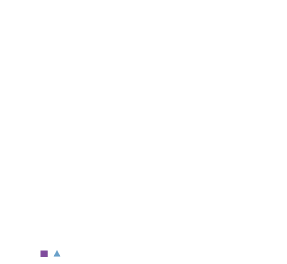
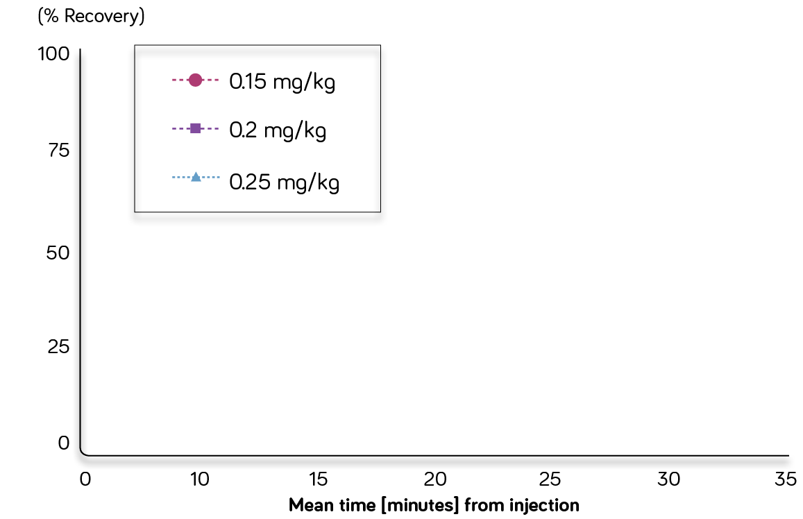

FAST OFFSET (average time 12-13 minutes across all doses)
from Neuromuscular Blockade1,2*


*Offset for all doses was the time interval between 25% recovery to T4/T1 ratio recovery ≥75%
SAFETY CONSIDERATIONS
FAST OFFSET (average time 12-13 minutes across all doses)
from Neuromuscular Blockade1,2*
*Offset for all doses was the time interval between 25% recovery to T4/T1 ratio recovery ≥75%
SAFETY CONSIDERATIONS

MIVACRON® (mivacurium injection chloride) is a short-acting neuromuscular blocking agent indicated for inpatients and outpatients, as an adjunct to general anesthesia, to facilitate tracheal intubation and to provide skeletal muscle relaxation during surgery or mechanical ventilation.
References:
CHART NOTE: Comparative mean spontaneous recovery curves of single twitch following various bolus doses. Measurements are from 5%–95% twitch recovery. Intervals from 25%–75% and from 5%–95% twitch recovery do not differ significantly.2